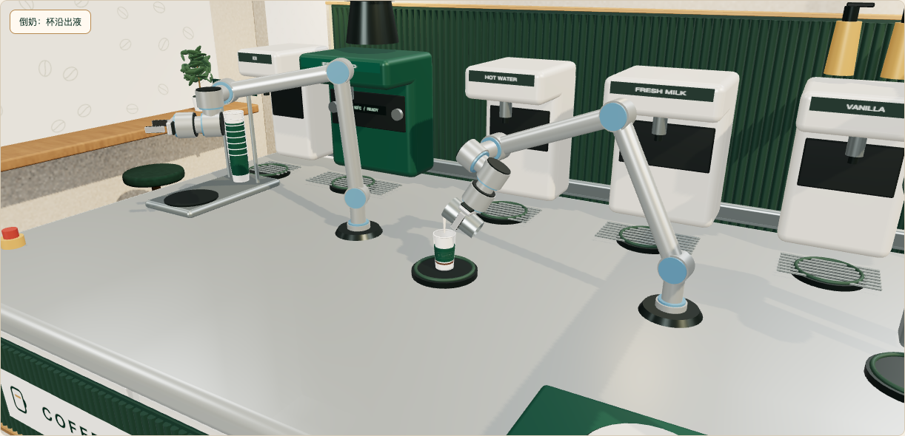

工作台实况
0.00 s
固定场景截图 · 非实时三维正在读取杯子状态
一键联调场景
整杯验证无需逐条发命令，示例规划器会控制设备。选择一种情况，观察过程，再检查结果。
- 1选场景正常制作或指定异常
- 2重置并运行清空当前实验，从落杯开始
- 3观察与核对看工作台、完成数和命令结果
尚未运行。正常场景包含 32 个接口任务：落杯 → 制作 → 双臂交接 → 封盖 → 出杯。
手动模式下由示例规划器自动推进；实时 1× 约需 5 分钟，也可选加速 16×。运行期间请不要用另一个客户端重置实验。
命令记录
暂无命令一行是一条设备命令，不是一整杯订单。点“查看”选择记录，下方显示原因与下一步；“查询最新结果”会向服务重新查询，适合确认丢通知后的实际结果。
已接收 → 等待条件满足执行中 → 设备正在动作成功 / 失败 → 本条命令结束
| 设备 / 动作 | 状态 | 命令 ID | 详情 |
|---|
还没有命令。先发送一次落杯，或运行上方的一键场景。
选择一条记录，查看它是否真正执行成功。
原始接口结果 JSON
暂无结果
技术事件日志（调试用）
用于核对接收、故障与通信事件。没有完成通知不代表动作失败，请查询原命令 ID。